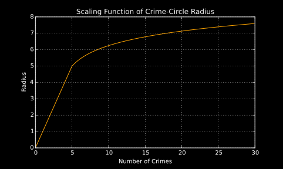

Assignment 4, "Mapping crime"
Deadline: 14. December 2015, 10:00
It appears that a large cluster of crimes was committed on a single street corner in the so called "Tenderloin" district. However, after using the data sets containing the locations of police stations and some research, it turns out that on the exact coordinates of that particular street corner one can find the San Francisco "Hall of Justice". Halls of Justice are usually referring to the main police station in a city. For this reason we think that the crimes are not actually committed at this location, but rather being processed in the police station.
In order to display an accurate outline of San Francisco, we have used the Overpass API of OpenStreetMap (OSM) to query and receive all coast lines, more precisely by using overpass turbo. Furthermore we have collected information about all streets, police stations, as well as bars, pubs, night-clubs, and beer-gardens. The data provided by OSM is in a OSM specific JSON format. However, the tool osmtogeojson allows to convert OSMJSON to GeoJSON, which we then use in our script.
The data collected from OpenStreetMap was quite large. For instance, the GeoJSON file containing all streets measured about 24 MB. In order to reduce the size of the input a Python script was used to strip away all unneeded information, such as street names, postal codes, etc., which resulted in a file size of about 3 MB. Subsequently the Python script was modified to omit all nodes of streets, which are less than 10 meters apart from a non-omitted adjacent node. This step reduced the file to a current size of 952 KB. The same pre-processing was used to reduce the amount of the coastal lines.
Crimes that happened at the same street corner have been grouped together and is displayed as a circle. Furthermore, we wanted to reflect the number of crimes in the size of the circle. Since the number of crimes at one street corner can be excessively large, depending on the active filters, we had to find a suitable scaling function. The chosen function returns the number of crimes + 0.7 as the radius, as long as the number of crimes is below 5. If the number of crimes is 5 or higher, the radius corresponds to ln(number of crimes - 3) + 4.3. The function is also plotted in the figure below. Note that the number of crimes is discrete and the plot below shows results for continuous values.
